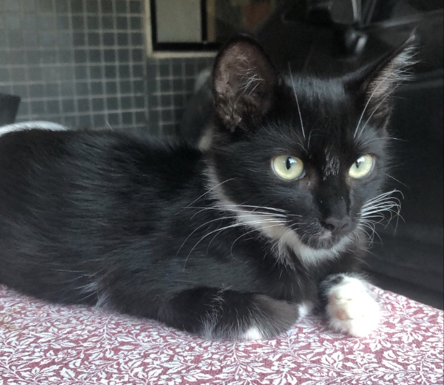

Meu nome é Bonna Gil Borsoi. Tenho 19 anos e sou estudante de Ciência da Computação do primeiro período do CIN-UFPE. Atualmente aprendendo Python e Html/Css, e cursando as cadeiras de Introdução à Computação, Introdução à Programação, Cálculo 1, Álgebra Linear e Vetorial para Computação e Matemática Discreta.
Meu hobbies preferidos são tocar guitarra, ler e praticar yoga. Sou super fã de Star Wars e Avatar a lenda de Aang! Ah, e acho que dá para perceber que sou apaixonada por gatos também hehe.
Uma seção especial dedicada aos meus filhos felinos. Sim, é claro que eles tinham que estar aqui também.
Apresento a vocês o dominador de fogo Zuko.
Azula, a irmã fria e calculista do Zuko.
Esse é Foguinho, o gato filósofo. Tio do Zuko e da Azula, seria ele o Tio Iroh?
O Appa, o gato mais dengoso de todos.
A dobradora de água, Katara. Fazendo jus ao nome, muito esperta e se comporta como a mãe do grupo.
Aqui tem o meu email do CIN: bgb@cin.ufpe.br (algum dia eu respondo, sério). E o meu github.